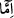

kudreti her şeyin üstündedir ve hikmeti de sonsuzdur. O, yedi kat semayı ve yedi kat arzı
çok ufak ve basit bir şeye sokmaya kâdirdir. Böyle olunca onların içinde bulunan güneşi
ve diğerlerini de elbette sokabilir.”
et-Te’vîlâtü’n-Necmiyye’de der ki: “Bir kimse: “Biz güneşin dördüncü kat semada ve
kendisine has bir yörüngede olduğunu biliyoruz. O halde kara bir balçıkta batması nasıl
mümkündür?” derse, biz buna şöyle cevap veririz: Allah Teâlâ, güneşin kara bir
balçıkta batmasının gerçek mâhiyetinden haber vermemiştir. Sadece Zülkarneyn (a.s.)’ın
onu batarken öyle bulduğunu zikretmiş ve: “Onu kara bir balçıkta batar buldu.”
buyurmuştur. Bunun sebebi ise şudur: Zülkarneyn (a.s.) batı denizinde yola çıkmış ve
denizde gemilerin daha ileriye gidemeyecekleri bir yere varınca, batarken güneşi
seyretmiş ve onu kendi gözünde sanki kara bir balçıkta batar bulmuştur.”
Bâzıları da şöyle demiştir: Zülkarneyn (a.s.)’ın peygamber olduğu kabul edilecek
olursa o, diğer peygamberlerin gördüğü gibi eşyâyı hakîkî sûretinde görmüştür. Nitekim
Hz. Peygamber (s.a.) de Necâşî’yi Medîne’den görmüş ve onun cenaze namazını
kılmıştı. Eğer peygamber olmadığı kabul edilecek olursa, onun güneşi böyle bulması
kendi zannına göredir.
“Onun” o kara balçığın “yanında da” yâni meskun yerlerin sona erdiği noktada,
batıdaki okyanusun sâhilinde, “bir kavim buldu.” Onlar putperesttiler. Yeşil gözlü ve
kırmızı kıllı idiler. Elbiseleri hayvan postuydu. Yiyecekleri ise balıktı.
Âlimlerden birisi şöyle demiştir: Bunlar, on iki kapısı olan bir şehirde yaşayan bir
kavimdi. Onların sesleri olmasaydı, insanlar güneşin batarken çıkardığı düşme sesini
işitebilirlerdi.
İmam Süheylî der ki: “Onlar, Cablas/Cabers halkıdır. Süryânice’de ona Cercîsâ
denir. Bu şehrin on bin kapısı vardır. Her iki kapı arası bir fersahtır. Orada bir kısmı
Semud neslinden, geri kalanı Sâlih (a.s.)’a iman eden bir kavim oturmaktadır.
Cablas/Cabers halkı, Rasûlullah (s.a.) isra gecesinde kendilerine uğrayınca O’na îman
etmişlerdi.”
Es’iletü’l-hikem’de der ki: Cebersa ve Cabelka hadîsi, mi‘rac gecesinde bu iki halkın
îman edişi ve bu iki kavmin ilk insanlardan olduğu haberi meşhurdur.
“Bunun üzerine biz: Ey Zülkarneyn! Onlara ya azap edecek veya haklarında iyilik
etme yolunu seçeceksin.” Yâni onları İslâm’a dâvet ettikten sonra işinde muhayyersin;
kabul etmezlerse ya öldürerek azab edersin ya da affederek veya esir alarak iyilik
yolunu tutarsın “dedik.” Bu, ilham yoluyladır. Savaşmakla emrolunması onun
peygamberliğine delalet eder. Nitekim Rasûlullah (s.a.) de: “İnsanlar “Lâ ilâhe
illellâh” deyinceye kadar onlarla savaşmakla emrolundum”[218] buyurmuştur. Nitekim
et-Te’vîlât’ta böyle denilmektedir. Haddâdî ise: “Bir kimsenin peygamber olduğunun
isbâtı için mutlaka kesin delil gerekir” der.
Âyette öldürme karşılığı olarak, iyi muâmele ifadesi kullanılmıştır. Âyetteki “
(veya)” lafzının muhayyer kılmak için değil, tevzî ve taksim için olması da mümkündür.
Yâni onlara muâmelen ya cezâlandırmak ya da iyilikte bulunmak yoluyla olsun.